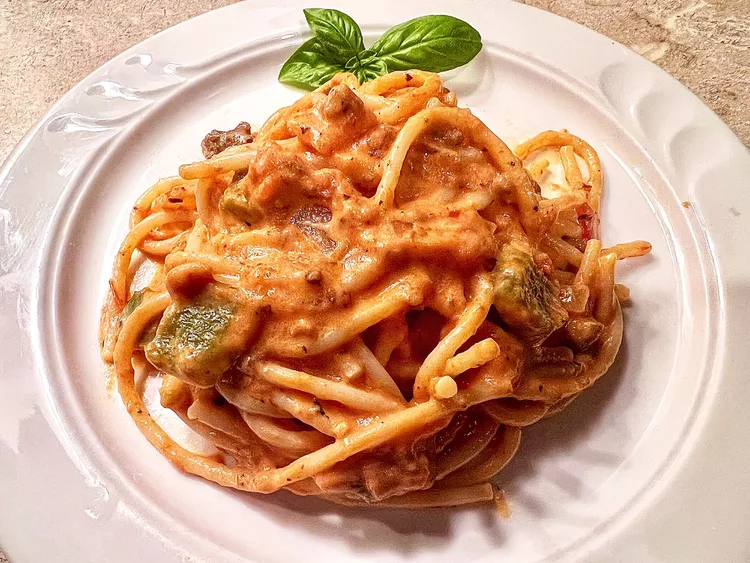

<!DOCTYPE html>
<html lang="en">
<head>
   <meta charset="UTF-8">
   <meta name="viewport" content="width=device-width, initial-scale=1.0">
   <title>Gochujang Spaghetti</title>
</head>
<body>
   </html><a href="../index.html">Home</a>
   <h1>Gochujang Spaghetti</h1>
   
   <h2> Creamy Gochujang Spaghetti with Ground Beef</h2>
   <h3>Ingredients</h3>
   <ul>
       <li>12 ounces spaghetti</li>
       <li>1lb of beef</li>
       <li>1 bell pepper, diced</li>
       <li>1/2 onion, diced</li>
       <li>2 garlic cloves, pressed</li>
       <li>1/4 cup tomato paste</li>
       <li>1/4 cup gochujang</li>
       <li>1 1/4 cup heavy cream</li>
       <li>1/2 cup freshly grated Parmesan cheese</li>
       <li>1 tbsp of oil</li>
       <li>salt and ground pepper to taste</li>
   </ul>
   <h3>Directions</h3>
   <ol>
       <li> <strong>Step 1</strong><p>Bring a large pot of salted water to boil and cook spaghetti, stirring occasionally until tender. Save 1/2 a cup of pasta water and drain the spaghetti</p></li>
       <li><strong>Step 2</strong><p>To a large hot skillet add the oil. Once oil is warm add onions and lightly salt, cook until translucent and fragrant. Repeat for garlic and bell pepper. After add ground beef and cook until browned and oil is produced.</p></li>
       <li><strong>Step 3</strong><p>Add tomato paste and gochujang and a bit of pasta water to easily incoporate pastes. After add heavy cream and salt and pepper to taste.</p></li>
       <li><strong>Step 4</strong><p>Add cooked pasta and Parmesan cheese, stir until combined. Add small portions of pasta water until desired thickness of sauce is achieved. </p></li>
   </ol>
</body>
